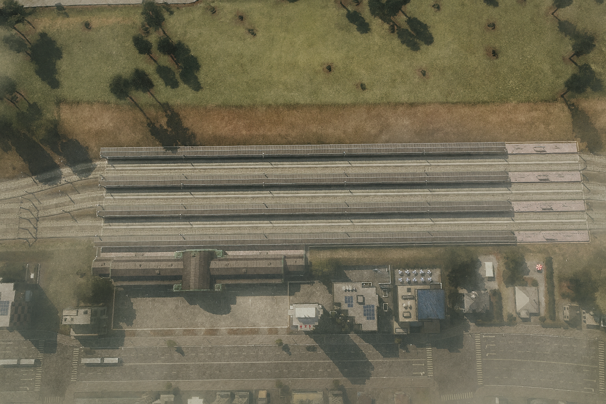

Kora railway station
The main and only railway station of Kora, built in 1841. The official documentary name is “Railway station of the city of Kora”; in everyday speech, “Kora railway station” is more common.
The station is located on the southern edge of the city, which is a consequence of centuries of urban expansion: when it opened in the 19th century, the station was in the center of Kora. The facility combines a preserved historic exterior with modern operation: six tracks serve passenger trains on multiple directions, and the building is known for an original Kivish architectural solution and a careful modernization of architectural lighting in the 2000s.

History
The station was built in 1841 under an author’s design that did not follow European stylistic “trends.” This independent language of forms—massive brick-and-stone facades, a central arched volume, and a copper roof— later became recognizable beyond Kivish as well. During World War II, some tracks were used for military transport and supply for the allied USSR.
Architecture
The building’s composition is built around a tall arched risalit with a clock dial above the main entrance. Over time, the copper roof acquired a characteristic green patina, emphasized by architectural lighting installed in the 2000s. Under the platforms are engineering channels and canopies; the structures are рассчитаны—designed— to receive long trainsets.
Tracks and platforms
The operating scheme includes 6 tracks with several covered platforms, intended primarily for passenger service. Wartime use of tracks in the 1940s was temporary and did not change the station’s civilian profile.
Incidents
- 1901. Due to a rail failure, a steam locomotive derailed, ran onto the platform, and overturned; a boiler explosion killed 23 people.
- 1950. An electric train with a faulty braking system derailed and damaged platform canopies. Mass casualties were avoided thanks to a warning from a visitor from Russia, Ivan Samolskiy, who quickly led people away from the platform.
In memory of the 1950 events, a memorial projector is installed on one of the columns, showing an artistic reconstruction of the station’s appearance and “revived” scenes from the 1950s.
Transport accessibility
There is no direct metro connection at the station. Transfers are provided by the nearby transport station “Vokzal”, opened in 1940: city and intercity bus routes are organized here.
Significance
The Railway station of the city of Kora is one of the key symbols of Kora and a rare example of a continuously operating 19th-century transport facility. It combines protective care for historical structures with systematic modernization of internal services (lighting, dispatching, passenger information), remaining the city’s main railway hub.
See also
Notes
- Dates and events are given according to Kora city chronicles and local archival materials.